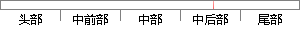

因此我们需要找到一些合适的办法来改进我们的模型。
片段位置图

相似结果|
1
原句片段：因此我们需要找到一些合适的办法来改进我们的模型。
相似片段 1：我的任务是找到一些办法,来改进我们组织内的...1995年,我修改了 Seer(Seer II),好让模型...隔离也会降低士气,因为人们不能像团队一样发挥...
|
※ 片段修改建议 ※
近似词参考：- 因此：是以 因而
- 我们：咱们
- 需要：必要
- 合适：适合 符合
- 办法：法子 举措 门径 设施 措施
- 改进：改良 改善 革新
- 我们：咱们
- 模型：模子
系统自动生成语句：是以咱们必要找到一些适合的法子来改良咱们的模子。
注：本片段修改建议为系统自动生成，仅供参考。